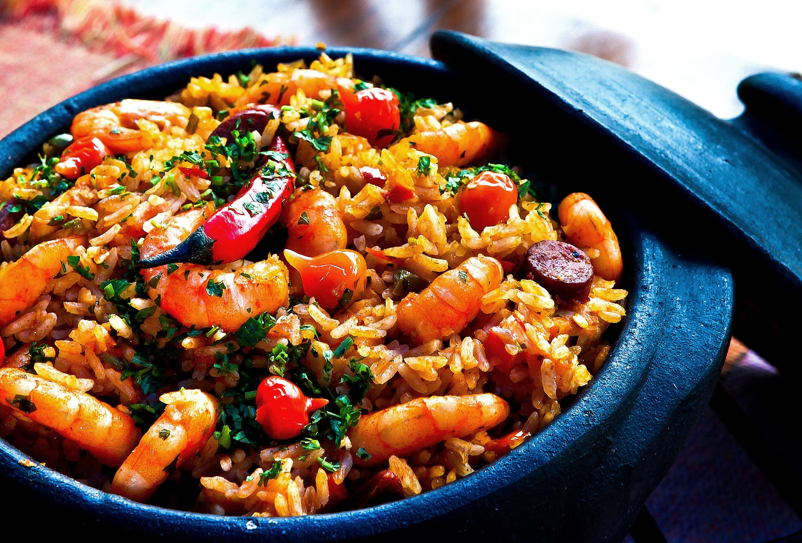
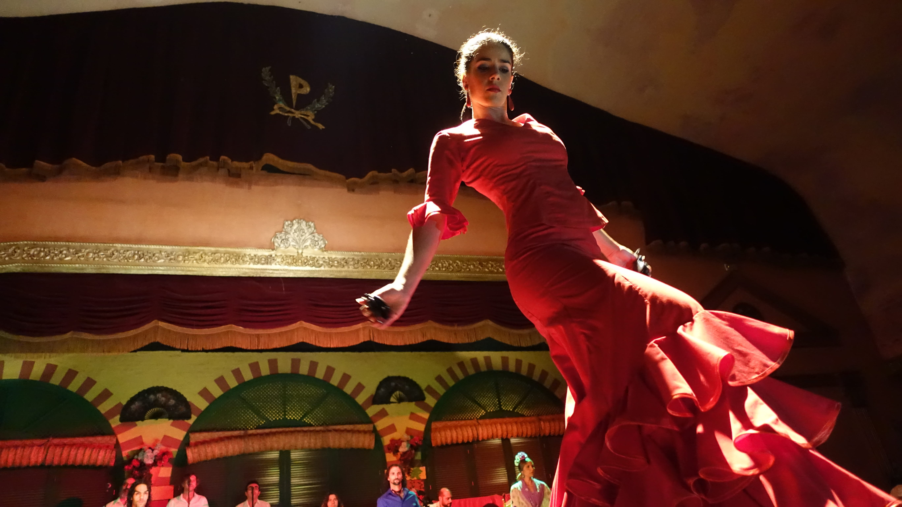
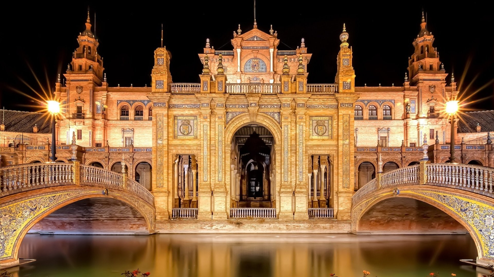

მთავარი კერძი

ესპანეთის ყველაზე ცნობილი კერძია პაია (Paella) — ბრინჯზე მომზადებული ზღვის პროდუქტების ან ხორცის კერძი. ასევე პოპულარულია ტაპასი — პატარა ულუფის საჭმელები, რომლებსაც მეგობრებთან ერთად იზიარებენ.
________________________________________________________________________________________________________________________________________________________________________________________________________________
ტრადიცია

ესპანეთში ძალიან ცნობილი ტრადიციაა სიესტა — დღის განმავლობაში რამდენიმე საათით დასვენება. ასევე პოპულარულია ფლამენკო — ვნებიანად ცეკვავენ და მღერიან. ესპანეთში ხშირად ტარდება ფიესტები — ფერადი და ხმაურიანი დღესასწაულები.
________________________________________________________________________________________________________________________________________________________________________________________________________________
საინტერესო ფაქტები
ესპანეთში მდებარეობს მსოფლიოში ერთ-ერთი ყველაზე უჩვეულო შენობა — საგრადა ფამილია ბარსელონაში.

_______________________________________________________________________


ესპანეთი ფეხბურთის ძლიერი ქვეყანაა — "ბარსელონა" და "რეალი მადრიდი" მსოფლიოში ცნობილ გუნდებად ითვლებიან.
_____________________________________________________________________________________________________________


ესპანეთის დედაქალაქი არის მადრიდი, ქალაქი ცნობილია მუზეუმებით, როგორიცაა Prado, სადაც მრავალი ცნობილი მხატვრის ნამუშევარია.
_____________________________________________________________________________________________________________________________

ესპანეთში ერთ-ერთი ყველაზე უცნაური ფესტივალია ტომატინას ფესტივალი, სადაც ადამიანები ერთმანეთს ტომატებს ესვრიან!
← დაბრუნდი← მთავარი
ზემოთ